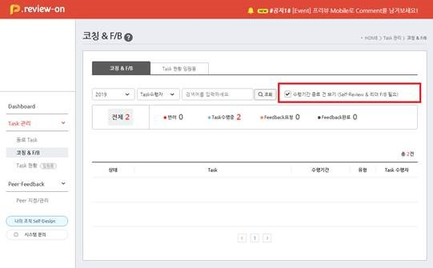
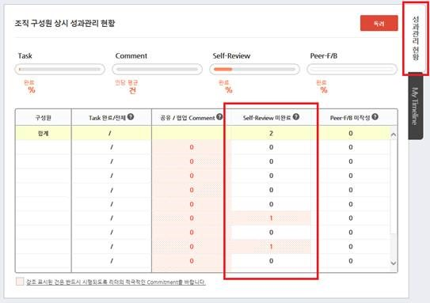

| 안녕하세요! ooo 님! |
수행기간이 종료된 Task의 Task리더이십니다.
종료된 Task에 대한 Feedback을 진행해 주십시오. |
| ※ “종료일이 지났으나 Review & F/B이 완료되지 않은 Task”를 2주 단위로 확인하여 알림 메일을 드립니다. |
< Self-Review 독려가 필요한 구성원 >
박팀원님, 김팀원님, 김팀원님, 김팀원님, 김팀원님,
김팀원님, 김팀원님, 김팀원님, 김팀원님, 김팀원님,
김팀원님 |
|
< Feedback 및 달성도 평가가 필요한 구성원 >
박팀원님, 김팀원님, 김팀원님, 김팀원님, 김팀원님,
김팀원님, 김팀원님, 김팀원님, 김팀원님, 김팀원님,
김팀원님
|
|
○ Task 수행기간이 종료되면..
- Task등록자는 Self-Review를 해야 하고,
- Task리더는 Feedback/달성도평가를 해야 합니다. |
○ Self-Review독려와 Feedback이 필요한 Task는..
- “P.review > Task 관리 > 코칭 & F/B” 메뉴에서 (http://p-review.sktelecom.com/approvalTask/taskList)
- “□ 수행기간 종료 건 보기”를 Click 하시어 확인하실 수 있으며, |
|  |
○ Feedback은..
- “Task 상세화면 > Task에 대한 리더의 Feedback” 버튼을 Click 하여 진행하실 수 있습니다. |
|
○ Self-Review 독려 대상 구성원은..
- “P.review > Main 화면의 성과관리 현황" Tab에서 확인하실 수 있습니다. |
|  |
○ 만약 Task 종료일이 변경되었다면..
- “Task 상세화면 > 수정"버튼을 Click 하시어 기간 변경이 가능합니다. |
진행 중 궁금하신 사항은
P.review 좌측 하단의 “시스템 문의”를 적극 활용해 주십시오. |
| 감사합니다. |
|